Feel the Space
Duration
5 months
Year
2026
Type
Individual thesis project
Role
Interaction Designer Creative Technologist
how can spatial intelligence transform retail beyond screens?
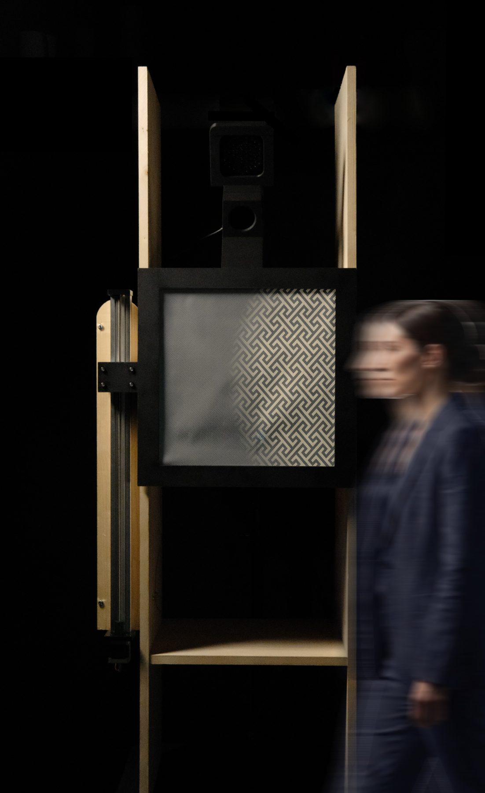
Hero shot
Abstract
With Artificial Intelligence seamlessly blending into our everyday lives, how will it redefine the way we experience physical environments? Feel the Space explores this frontier.
It is a spatially intelligent installation for premium retail, exploring how a space mediated by Artificial Intelligence can become the primary interface between a person and the materials it holds. Situated conceptually within the Hosoo Flagship Store in Kyoto, the installation uses movement, gaze tracking and touch to engage visitors in an active dialogue.
The prototype
The challenge
How can emerging forms of spatial intelligence transform physical retail beyond screen-based interactions, in a way that honours the sensory, embodied way people already engage with premium, handcrafted products?
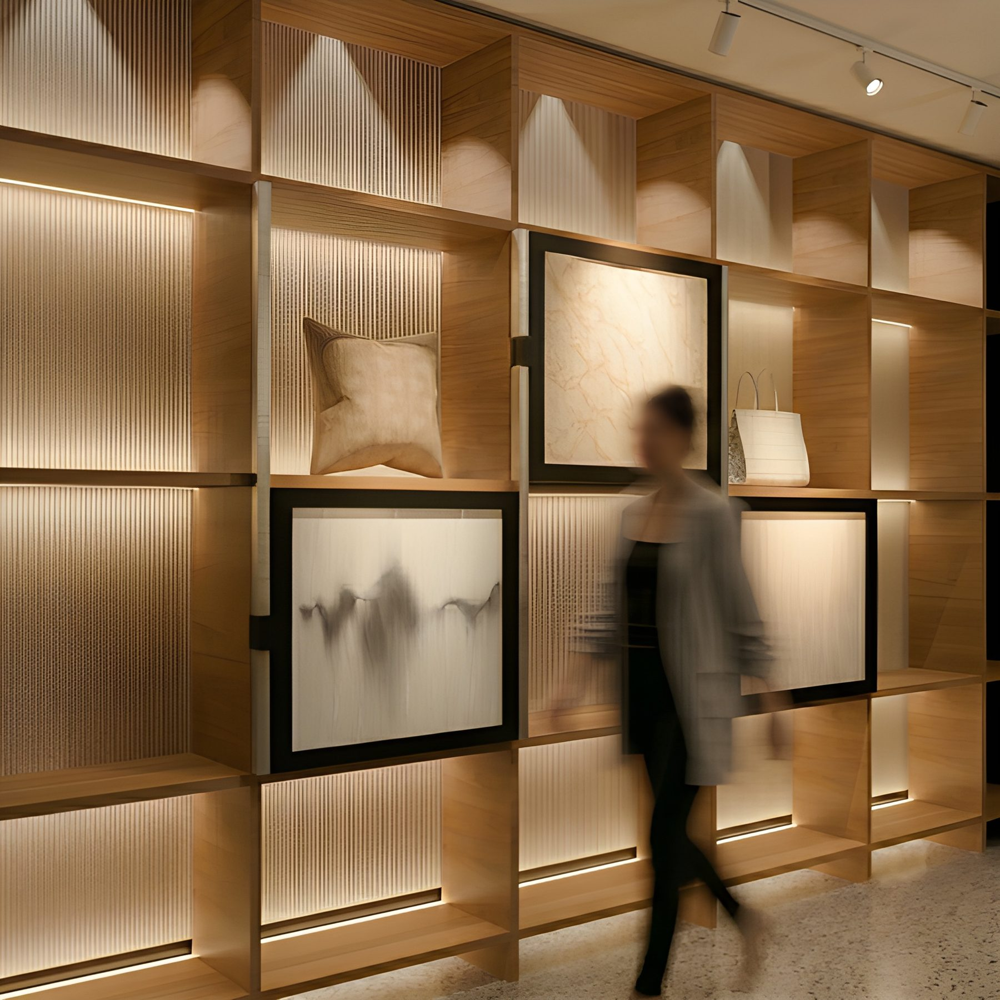
The installation in the store
The solution
Rather than relying on screens, the installation embeds intelligence directly into the physical space: a woven textile panel, projectors and a motorized linear actuator, driven by a computer-vision pipeline (person detection, distance and velocity estimation, gaze tracking) that lets the environment perceive and respond to visitors through light, kinetic motion and the reactive textile itself.
Three levels of interaction
Spatial interaction
Gaze interaction
Tangible interaction
Idle state
In its idle state, the fabric remains motionless, while a subtle light traces its natural pattern. As a visitor approaches and looks toward it, animated patterns bloom across the textile and the panel glides along its rail, orienting itself toward the person. Touch is the final, most intimate step: the moment a hand meets the fabric, the installation surfaces the craft intelligence held within it.
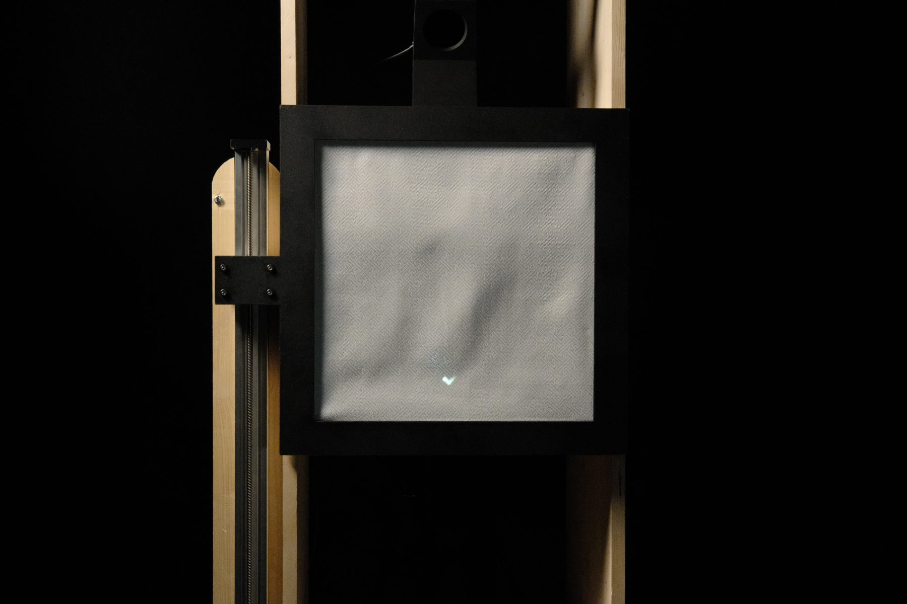
The visuals
The projections upon the fabric digitally reinterpret the production process of Nishijin-ori, a Kyoto weaving tradition spanning centuries, made of eight specialized steps where thread, color and design are shaped before a single thread is ever woven. Every frame captures the materiality of a single phase.
Built in WebGL, the visuals are touch-reactive: capacitive sensing through the fabric reads the pressure of the visitor's hand and drives the speed and density of the composition.
The eight Nishijin-ori steps
Zuan
Ishozu
Seiren
Nenshi
Itozome
Seikei
Hata-jitate
Hata-ori
Research
A mixed-methods approach (literature review, trend analysis, benchmarking of flagship stores, field observations, surveys, interviews with consumers and retail experts) explored how people perceive, touch and engage with products in premium retail environments.
A field study in the flagship store observed how visitors navigate and interact with the environment, and a visitor journey map highlighted the moments where spatial intelligence could enhance the experience.
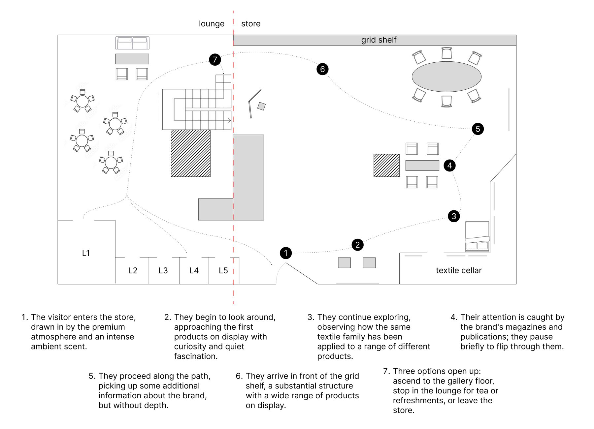
Visitor journey map
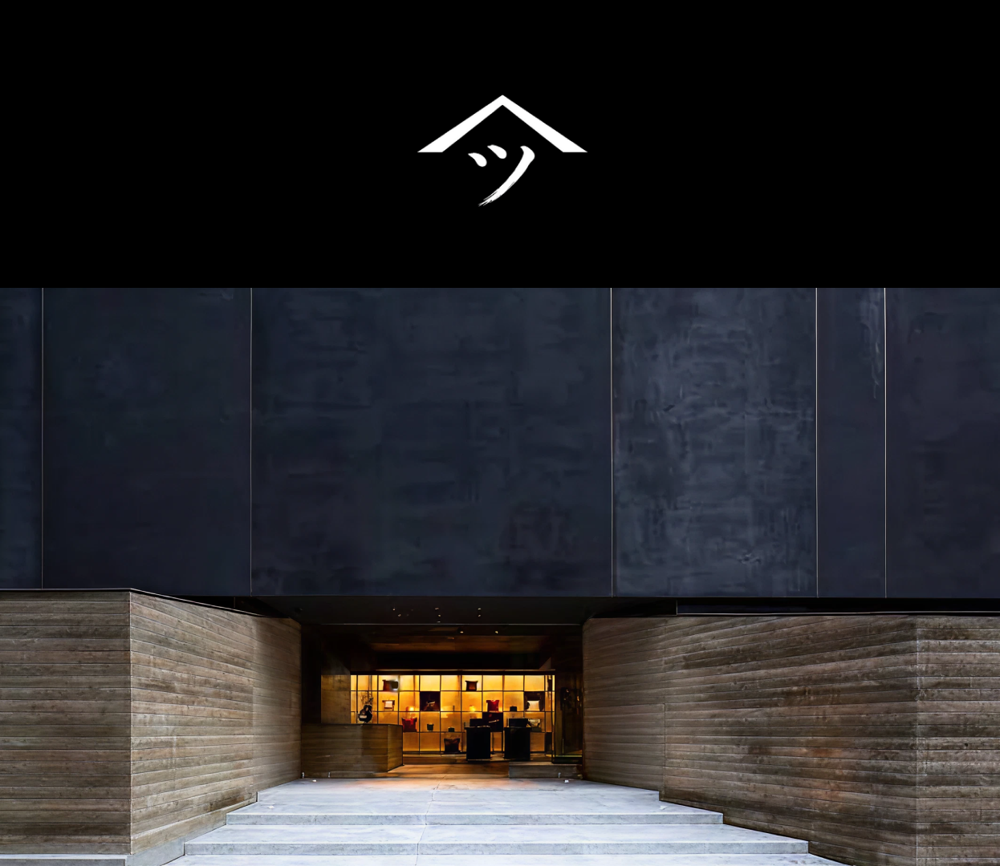
Hosoo Flagship Store, facade
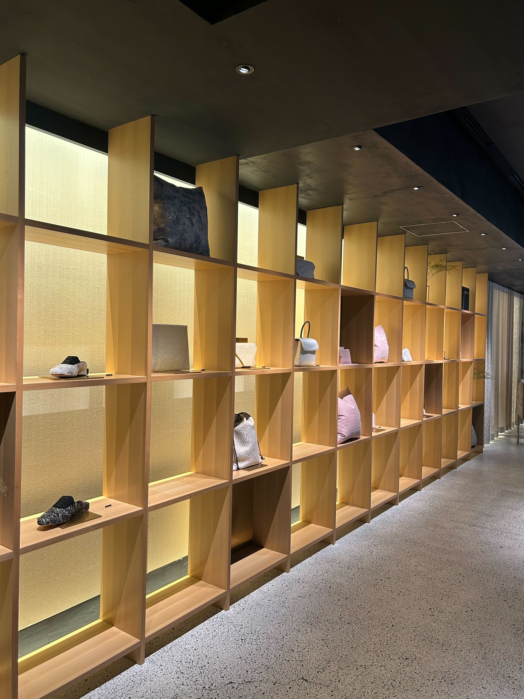
Hosoo Flagship Store, interior
Prototyping
Two tracks were developed in parallel and continuously tested against one another. A Python pipeline handles person detection (YOLOv8), distance and velocity estimation through an Intel RealSense L515 depth camera, and gaze estimation.
To make the Nishijin-ori fabric interactive, a conductive fabric connected to an ESP32 was layered behind it, detecting touch and pressure, while a projector maps the visuals onto the textile.
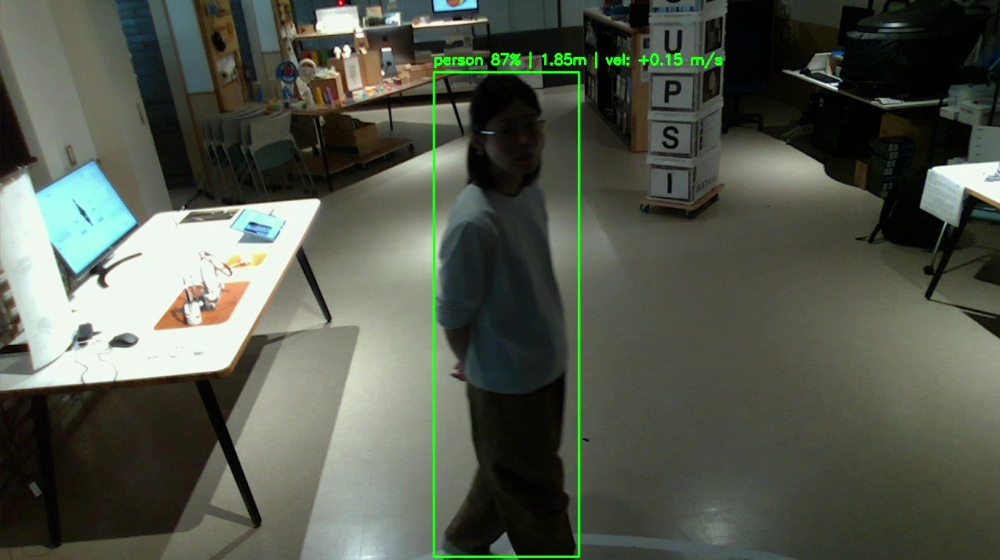
Person detection
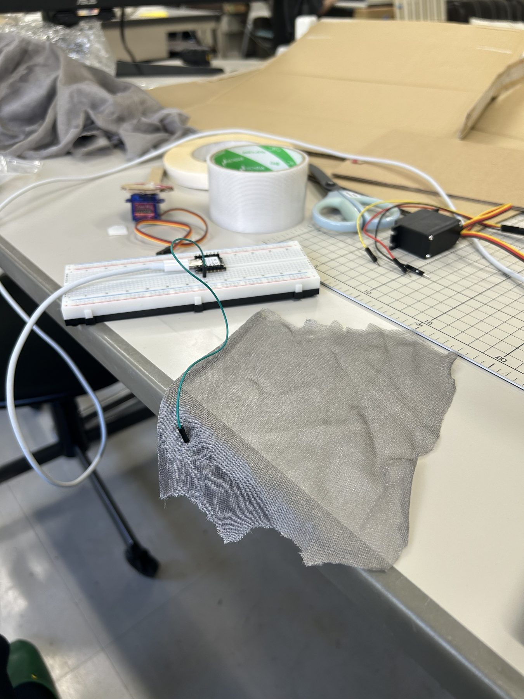
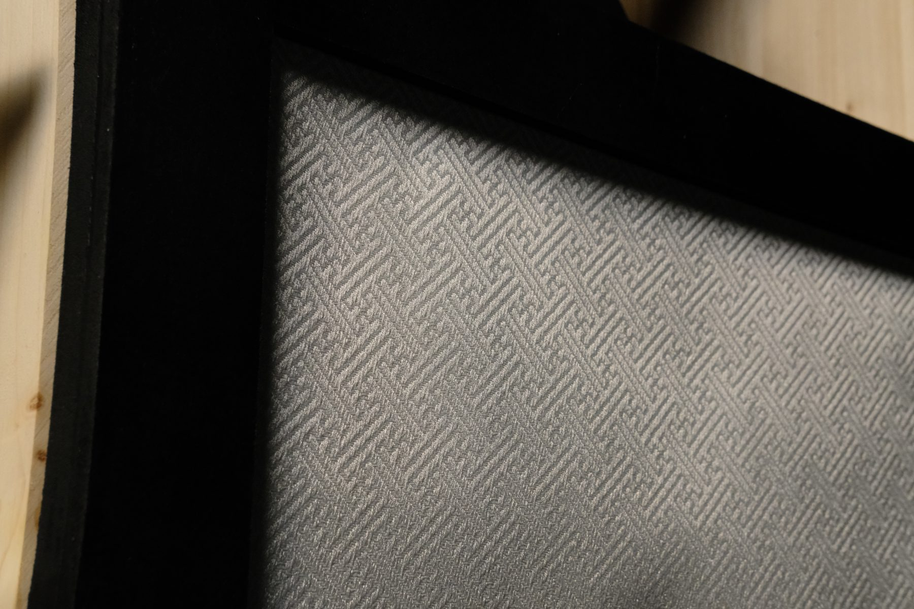
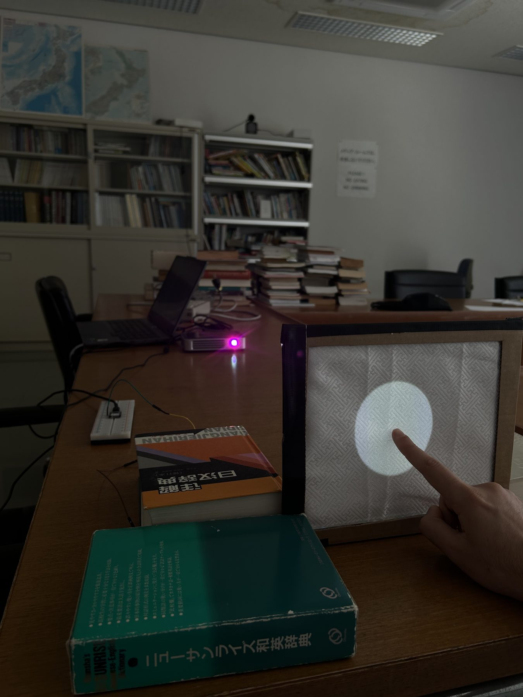
Tangible interaction tests
Testing and kinetics
The two tracks were integrated into a first low-fidelity prototype, exhibited and tested at Kyoto Sangyo University, where the project was developed. The feedback was used to refine the installation.
A third track, the kinetic movement, was added after returning from Japan: a lead-screw linear actuator with a Nema17 stepper motor, driven over Wi-Fi when the gaze shifts from one cell of the grid to another.
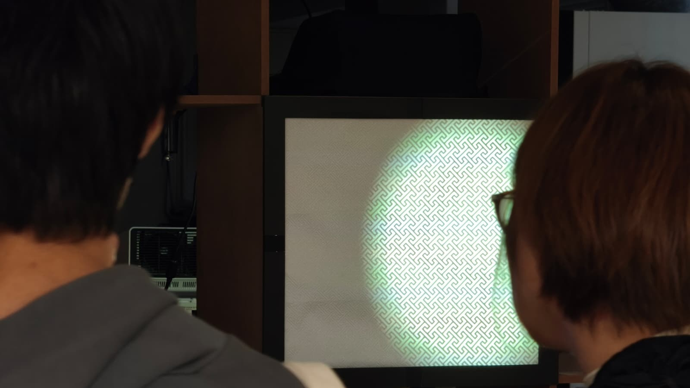
Exhibition at Kyoto Sangyo University
Kinetic test
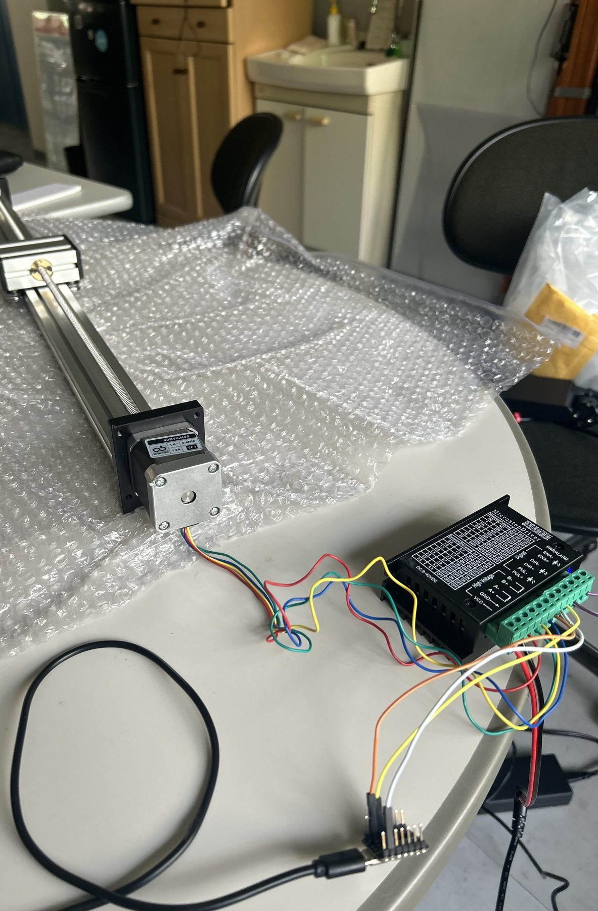
Actuator and rail
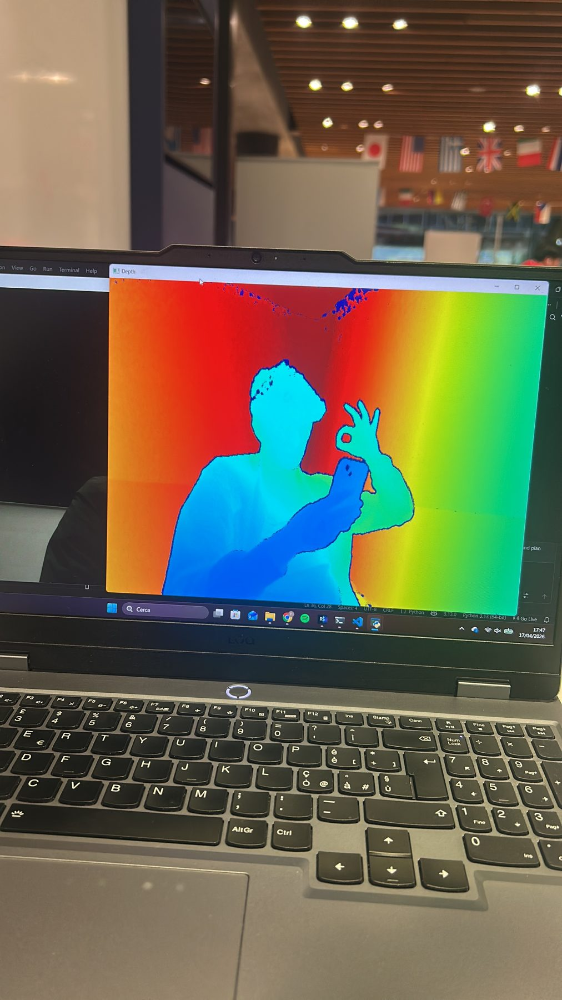
Depth camera
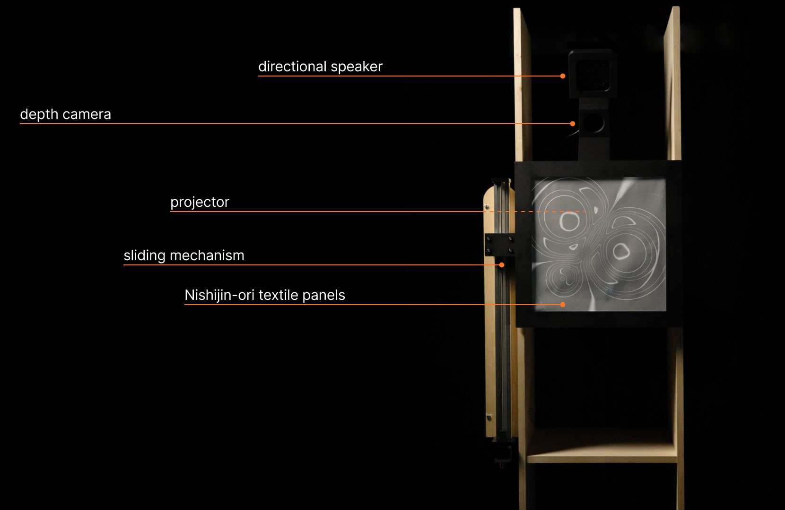